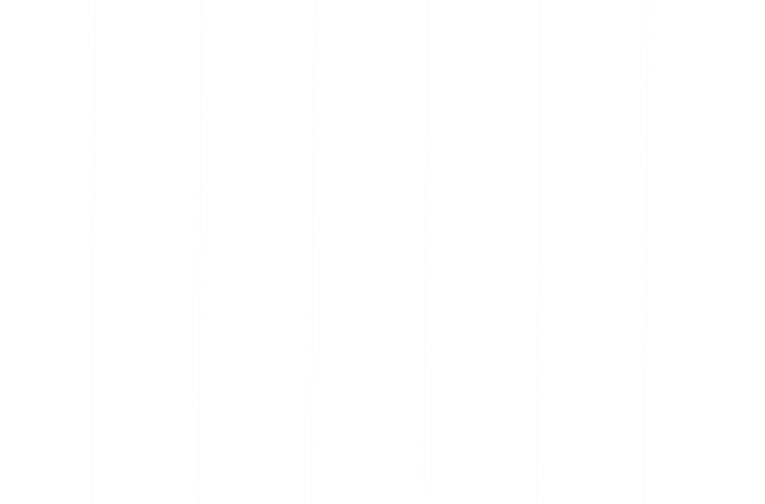

Fullstack Developper
Chez Maith, nous allions créativité et expertise technique pour concevoir des solutions digitales sur mesure. Du développement de sites web modernes au design UI/UX soigné, nous accompagnons les entreprises de toutes tailles dans leur transformation digitale en créant des expériences uniques et performantes qui répondent à leurs besoins spécifiques.
Telecharger CV